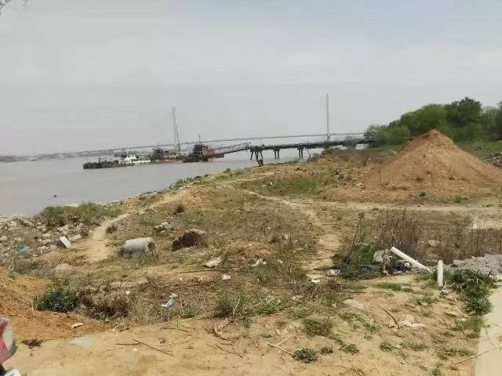
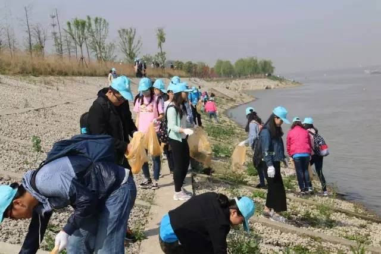
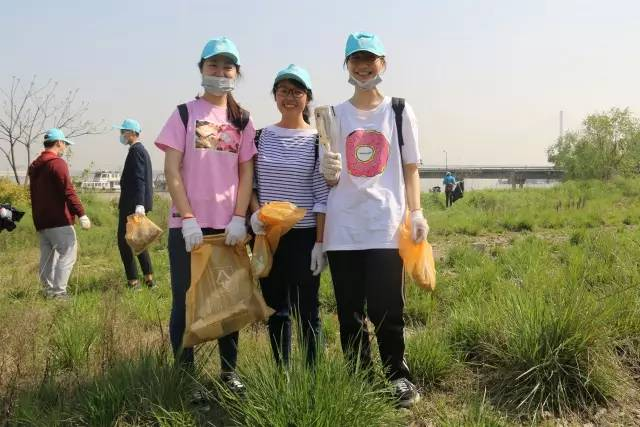
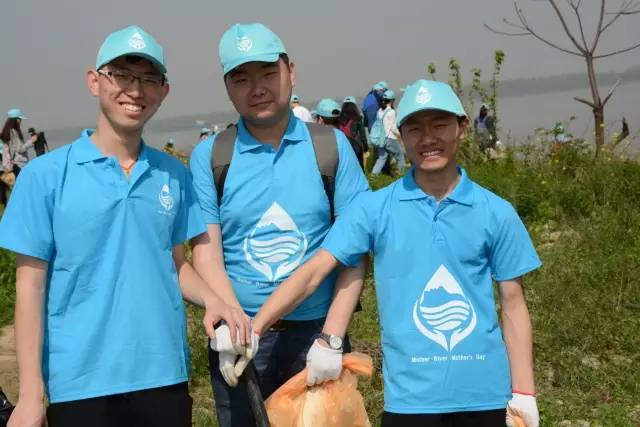
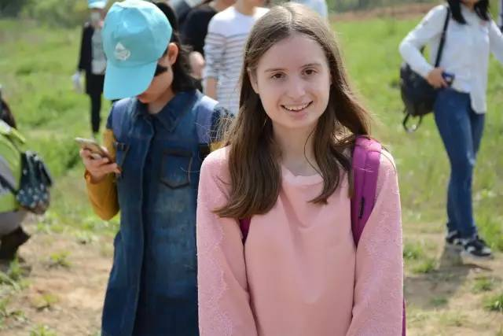
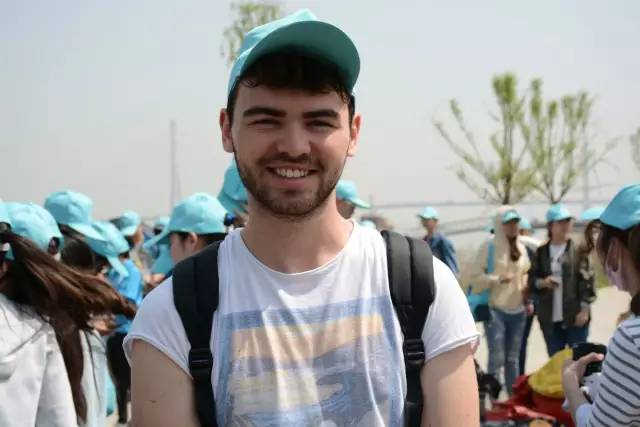
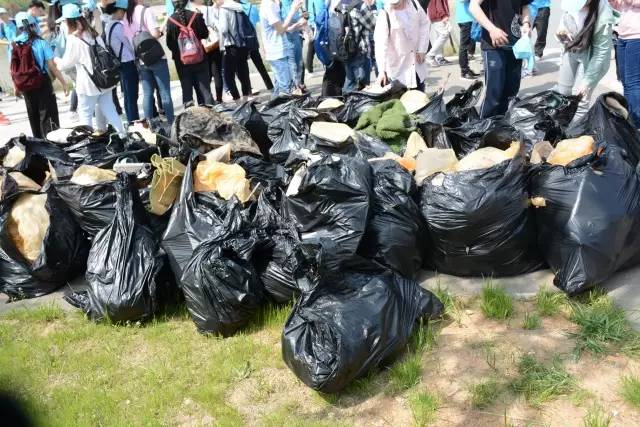
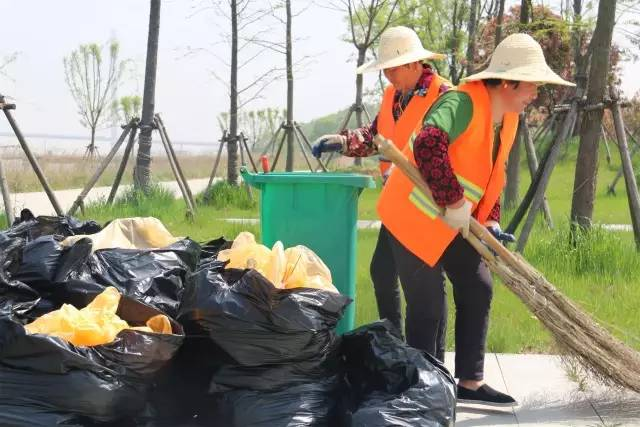
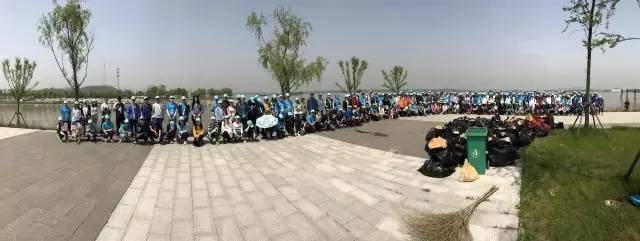
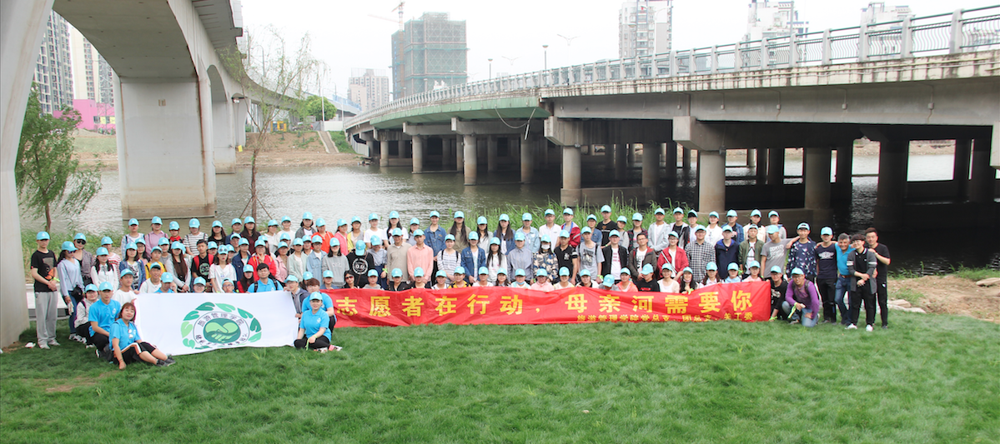

南大英语系外教TONY老师是“母亲河·母亲节”项目的发起人。加籍意裔的他对长江充满了感情，并组织起一批无偿志愿者，在每年春天母亲节的前一个月，开展大型河岸清理活动——表达对河流与母亲的敬意。
几个月前，“母亲河·母亲节”项目负责人，南大英语系大三的彭诗语同学，就开始带领队友勘测适宜开展活动的河段，最终敲定在燕子矶附近。本应秀美如画的江岸，被随处可见的垃圾破坏得污迹斑斑，让人痛心不已。而这也更坚定了“清流”志愿者行动的决心。
4月15日周六上午8点240名南大志愿者，4月19日南京旅游职业学院的志愿者到达长江江岸展开环保行动。一顶顶绘着“清流”标志的“小蓝帽”，分散在白如练的长江边，点缀在绿如茵的草丛里。
哪里有小蓝帽，哪里就有青春活力，有欢声笑语也有挥汗如雨。每顶小蓝帽都有一段自己和清流组织相遇相识的故事。
1.捡到玻璃瓶的姑娘
来自外国语学院的卢雪儿、张萌晴、杨湃湃同学为清理中缴获的战利品（一只硕大玻璃瓶）激动不已。“TONY是我们的写作老师，在课上听到TONY的宣传，我们三个就一起报名参加了。
2.商院兄弟连
这是齐心协力的商院兄弟连。最左边的王麒瞳作为清流团队组织者之一，在班群尽心尽力展开宣传，吸引来不少志同道合的小伙伴。向晨旭逗趣地说道“没想到捡垃圾也很舒服呢！”。加入摄影组的商学院王硕同学则惊讶地表示“很佩服大家能发现这么多垃圾。这就和摄影一样，要有发现细节的眼睛呀！”
3.澳大利亚姑娘
这名梨涡浅笑清丽动人的姑娘，是来自澳大利亚的跃红。逐渐习惯使用微信的她在朋友圈刷到了母亲河团队志愿者招募通知，当机立断就报名了。
4.法国小伙子
他叫欧力杨，来自法国，正在南大学习中文。“我在做一件非常有意义的事情”，欧力杨微笑着说。对长江之美的珍惜，对生命之源的敬畏，不分性别国籍，是所有人心中共通的美好情感。四海少年心，三春长江情，在金陵相遇，在清流凝聚。
当然啦，清流志愿者的故事还有许多许多......
起初人手一只的橙色垃圾袋早已因为撑满而被迫退役，换成更大的黑色垃圾袋继续战斗。三个小时过去，“小蓝帽”们缴获了满满的“战利品”。
从前，当我们想到长江，也许是烟花三月的烂漫，也许是高山融雪的伟岸，也许是奔流入海的雄壮。但今天清流志愿者奏响长江之歌的方式，却如同黝黑泥土般质朴。一袋袋垃圾，装满了志愿者对长江母亲最深沉诚挚的爱意。
看到清洁工阿姨捡拾志愿者用过的手套，清流协会赶紧组织大范围回收。阿姨不停地感谢小伙伴，而志愿者们更想对他们道谢，感谢她们守护在长江边为了清洁环境夜以继日的操劳。
“我们赞美长江，你是无穷的源泉。我们依恋长江，你有母亲的情怀”。因为牵挂，所以操劳。因为付出，才更热爱。罗曼罗兰有段关于“忧与爱”的经典论述，值得送给每位清流志愿者：在这些神圣的心灵中，有一股清明的力量和强烈的爱，像激流一般飞涌出来，甚至无须倾听他们的声音，就在他们的眼里，他们的事迹里，即可看到生命从没像处于忧患时那么伟大，那么丰满，那么幸福。最后，再来放送一下大合照，感谢大家的参与！
 